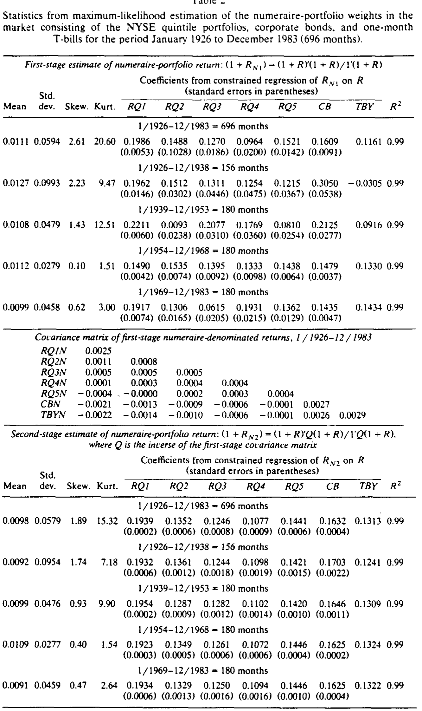
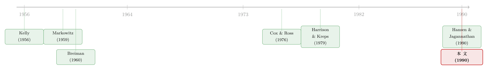

不换概率，换计价单位：被遗忘三十年的「计价组合」
本文读的是 Long (1990, Journal of Financial Economics)：要给资产定价、要表达「市场里没有免费的午餐」，主流的办法是换一个概率测度（风险中性测度／等价鞅测度）。Long 提出了一条完全相反的路——别动概率，动计价单位。只要把所有价格和分红都用一个特殊的自融资组合（他称之为 numeraire portfolio，「计价组合」）来折算，那么在真实的、客观的概率下，每一个资产的期望收益率就恒等于零。而这个组合，恰恰就是大名鼎鼎的对数效用「增长最优组合」。
1 一个被换来换去的「概率」
学过衍生品定价的人，大概都被一件事困扰过：明明我们关心的是真实世界里股票会怎么走，可一到定价，老师就让你「换到风险中性世界里去算」。
这套手法的逻辑是这样的。Cox and Ross (1976) 论证：如果一份权益的收益可以用证券和无风险借贷精确复制，那么它的均衡价格，应当与「假设所有投资者都风险中性」时算出来的价格一致。而在风险中性的世界里，所有证券的期望收益率都等于无风险利率。于是定价分三步走：(a) 把真实概率测度换成一个等价测度，在这个测度下所有资产的期望收益率都等于无风险利率；(b) 用这个测度算权益的期望收益；(c) 再用无风险利率折现回当下。Harrison and Kreps (1979) 把这个替身测度命名为「等价鞅测度（equivalent martingale measure）」，并在相当一般的框架下证明了一件漂亮的事：这样一个测度存在，当且仅当市场上不存在套利机会。
这是现代金融的基石之一。但请注意，它的代价是：你必须离开真实概率，跑到一个虚构的、人为构造出来的概率世界里去运算。对很多人来说，这一步既不直观，也不容易解释——那个「等价测度」到底是什么？它和我们真正相信的概率有什么关系？
于是一个自然的问题是：有没有可能不换概率？ 能不能就站在真实世界里、用我们真正相信的那套概率，把「没有套利」这件事干净地表达出来？
Long (1990) 的回答是：能。你只需要换掉另一样东西——计价单位（numeraire）。
一句话点破二者的对偶关系：风险中性定价是固定计价单位（用无风险债券），去改概率；而计价组合方法是固定概率（用真实概率），去改计价单位。两条路通向同一个无套利世界。
2 什么是「计价组合」
我们先把舞台搭起来——这是一篇理论论文，定义必须精确。
考虑离散时间 \(t=0,1,\dots,T\)，没有交易成本、没有卖空限制。市场上有 \(K\) 个资产，资产 \(j\) 在 \(t\) 时刻的单位分红为 \(D_{jt}\)、除息价格为 \(P_{jt}\)，\((t-1,t]\) 区间的收益率为 \(R_{jt}\)。一个组合（portfolio） \(X\) 是一个向量值随机过程，\(X_t\) 表示在 \(t\) 时刻交易结束后各资产的持有份数。组合的市值与现金流分别为
$$V_{Xt} = X_t' P_t$$
$$C_{Xt} = X_{t-1}'(D_t + P_t) - X_t' P_t = X_{t-1}' D_t - \Delta X_t' P_t$$
其中 \(\Delta X_t = X_t - X_{t-1}\)。一个自融资组合（self-financing portfolio），是指在所有未来日期 \(t\ge 1\) 现金流都为零的组合——初次买入之后，它不再吞钱也不再吐钱，靠自身腾挪。Long 还要求市场上至少存在一个自融资组合，其价值永远严格为正（强意义上大于某个正数 \(\varepsilon\)），这样它才能当「分母」用。
接着是全文的核心定义。一个计价组合（numeraire portfolio） \(N\)，是这样一个价值恒正的自融资组合：对每个资产 \(j\)、每个时刻 \(t\)，
$$E_t\!\left[\frac{1+R_{j,t+1}}{1+R_{N,t+1}}\right] = 1, \qquad j=1,\dots,K$$
这里 \(E_t\{\cdot\}\) 是基于 \(t\) 时刻全部信息的条件期望，\(R_{N,t+1}\) 是计价组合自身的收益率。把分子分母都除以计价组合的当期价值，就是「用计价组合来折算」的意思。这个条件等价地说：每个资产「以计价组合计价的收益率」的条件期望恒等于零。
我用一个带标注的方程，把这个核心条件拆开看：
这个等式美在哪里？它说：当价格用计价组合来折算后，资产价格等于其未来折算后收益的未折现期望之和，而零永远是任何资产折算收益率的最优条件预测。换句话说——我们再也不需要那个虚构的等价测度了。真实的概率测度，自己就成了一个鞅测度。 这正是 Long 相对于 Harrison-Kreps 的贡献：定价时，不必做任何测度替换。
3 存在性定理，与一个意外的老朋友
定义漂亮归漂亮，可它和「没有套利」到底是什么关系？这就是全文的中心定理。
先说什么叫套利机会（profit opportunity）。Long 定义为一个组合 \(S\) 满足：(a) 初始价值非正 \(V_{S0}\le 0\)；(b) 中间各期现金流与期末含息价值都以概率 1 非负；(c) 要么初始价值严格为负，要么未来某处有正概率出现正的现金流或期末价值。说白了就是「无中生有」：要么不花钱（甚至倒贴钱）就能买到一份非负、且有正概率为正的未来收益，要么把一份确定为零的未来收益卖出正价钱。
定理 1（存在性）：在所有可行组合中，计价组合存在，当且仅当不存在套利机会。而且，若 \(A\)、\(B\) 都是计价组合，则它们的收益率以概率 1 处处相等——计价组合的名义收益率是唯一的（即便在有冗余资产时，其持仓构成可以不唯一）。
「计价组合存在 ⟹ 没有套利」这一半很容易：如果计价组合 \(N\) 存在，由定义和迭代期望律，任何组合 \(X\) 都满足某个由 \(N\) 决定的初始价值公式；可一旦 \(X\) 是套利机会，这个公式就会被违反，矛盾。
真正关键的一步在于反方向：没有套利 ⟹ 计价组合存在。Long 的证明思路堪称神来之笔——他不去硬构造，而是去解这样一个优化问题：
$$\max_{X}\; E_0\{\ln V_{XT}\} \quad \text{s.t.}\quad V_{X0}=1,\ X\ \text{自融资且价值恒非负}$$
然后他指出：计价组合的那组定义条件，恰恰就是这个最大化问题的一阶条件。在第 2 节的假设下（价格分红有界、存在价值恒正的自融资组合），只要没有套利，这个问题就有解；于是计价组合存在。
到这里，反转出现了。这个 \(\max E_0\{\ln V_{XT}\}\)，正是对数效用投资者的组合选择问题。也就是说——
计价组合，就是 Kelly (1956)、Latane (1959)、Breiman (1960) 提出的那个增长最优组合（growth-optimal portfolio）。一个为了「无套利定价」而定义出来的纯理论对象，竟与一个为了「长期财富增长最大化」而提出的、被几十位作者研究过的组合，是同一个东西。
这是两条完全不同的研究传统在 1990 年的一次握手。值得强调的是：Long 全程没有假设任何投资者真的具有对数效用。对数效用只是用来刻画这个组合「长什么样」的数学工具，而不是对偏好的假定。
4 它长什么样？——近视、myopia，与一个伪装的 CAPM
既然计价组合就是对数投资者会选的组合，我们就能借用一堆现成的性质来描述它。
定理 2（近视性，myopia）：计价组合在 \(t\) 时刻退出时的价值比例，只取决于 \(t\) 时刻一步向前收益率 \((1+R_{j,t+1})\) 之间相对比值的条件分布。具体地，价值比例向量 \(\pi_t\) 是下面这组方程的解：
$$E_t\!\left[\frac{1+R_{j,t+1}}{\pi_t'(1+R_{t+1})}\right] = 1, \qquad j=1,\dots,K$$
而 \(1+R_{N,t+1} = \pi_t'(1+R_{t+1})\)。它「近视」在于：完全不必往后看到 \(t+2,t+3,\dots\)，只盯着下一步的相对收益就够了。这一点在实证中至关重要——它意味着以计价组合折算的收益率，可以是平稳的随机过程，哪怕名义收益率本身不平稳。比如纯粹的物价水平通胀（同比例改变所有资产价格与分红、但不改变它们的相对值），完全不影响折算后的收益。
但定理 2 在完全市场下才给出干净的刻画，在一般的不完全市场里并不那么informative。于是 Long 又给了一个更易把握的近似——把计价组合放到均值-方差的图景里去定位。
定理 3（均值-方差近似）：基础是这个对数的二阶近似
$$E_t\{\ln(1+R_{X,t+1})\} \approx E_t\{R_{X,t+1}\} - \tfrac{1}{2}\,\mathrm{var}_t\{R_{X,t+1}\}$$
\(E_t R\) 和 \(\mathrm{var}_t R\) 越小，近似越好；而正如附录在连续时间里所示，当交易区间趋于无穷小、可以连续交易时，这个近似实际上变成精确的。最大化这个近似目标，得到一个均值-方差有效组合。若 \((t,t+1]\) 区间存在无风险借贷利率 \(r_{F,t+1}\)，则近似计价组合是均值-方差切点组合 \(Q\) 的一个加杠杆头寸：
$$R_{N,t+1} = \lambda(t) R_{Q,t+1} + (1-\lambda(t)) r_{F,t+1}, \qquad \lambda(t) = \frac{E_t R_{Q,t+1} - r_{F,t+1}}{\mathrm{var}_t R_{Q,t+1}}$$
而在这个特定杠杆下，会冒出一个眼熟得吓人的关系：
$$E_t\{R_{j,t+1}\} - r_{F,t+1} = \mathrm{cov}_t\{R_{j,t+1},\, R_{N,t+1}\}, \qquad j=1,\dots,K$$
每个资产的期望超额收益，等于它与计价组合收益的协方差。这几乎就是资本资产定价模型 (Capital Asset Pricing Model, CAPM) 的样子——只不过把「市场组合」换成了「计价组合」，而且因为杠杆 \(\lambda(t)\) 取得恰到好处，比例常数正好是 1，于是 beta 关系退化成了纯协方差。当切点组合恰好就是市场组合（即标准 CAPM 成立）时，计价组合就是市场组合的一个加杠杆头寸。这也解释了一个有趣的历史：Roll (1973)、Fama and MacBeth (1974) 等人对「对数效用模型」的检验，其实可以重新解读为——检验常用的市场组合代理，是不是同时也是股票市场计价组合的好代理。证据相当支持「以代理折算的股票收益期望为零」这个命题，Roll (1973) 甚至担心证据支持得「太强了」。
（关于「期望超额收益 = 与某个基准组合的协方差」这种刻画，以及它与随机贴现因子的对偶，可参见《一把丈量所有定价模型的尺子——HJ 距离，与它照出的"过得了今天、过不了明天"》；Long 在脚注里专门提到，Hansen and Jagannathan (1990) 的基准组合，其总收益大致表现得像计价组合总收益的倒数。)
5 从理论到尺子：折算收益作为「异常收益」
理论之外，Long 还往前走了一步：既然没有套利时，未来折算收益的最优预测是零，那么以计价组合折算的收益，天然就是衡量「异常收益（abnormal return）」的好尺子。
一个资产的折算总收益 = 名义总收益 ÷ 计价组合的名义总收益。这相当于用同期市场表现（由计价组合的名义收益度量）去调整名义收益，而计价组合对自己的折算收益率按构造恒为零。在这个意义上，折算收益度量的是「资产特有的收益」，和市场模型 (market model) 的残差是一回事。但相比市场模型的预测误差，它有两个实打实的优势：第一，折算收益的多元过程只依赖相对总收益，因而在更宽的条件下平稳——通胀过程的变动可能让市场模型参数漂移，却不影响相对总收益；第二，给定计价组合代理的名义收益时间序列，各资产的折算收益只需做一次简单除法就能算出，无需为每个资产估计市场模型参数。
第 4 节里 Long 用一组异质资产（NYSE 规模五分位组合、公司债、短期国库券）来检验若干代理。结论是：对某些代理（如价值加权 NYSE 组合，以及股票、债券、国库券大致等权的组合），以代理折算的股票收益与市场模型预测误差非常相似，而作为异常收益的度量，明显优于市场调整收益（market-adjusted returns）。

Table 7
6 文献脉络
把这条线索捋一捋，会看到两股本来不相往来的水流，在这篇论文里汇合。
一股是长期增长的传统：Kelly (1956) 从信息论角度提出按对数效用下注的「增长最优」准则，Latane (1959) 与 Breiman (1960) 接力，证明这个组合在投资期限拉长时几乎必然跑赢任何其他自融资组合。这股传统在 1960 年代到 1970 年代初最热闹，Hakansson (1971) 把它与均值-方差有效组合做了系统比较。但这一支主要痴迷于组合的数学性质，与定价关系不大。
另一股是无套利定价的传统：从 Markowitz (1959) 的均值-方差、Sharpe (1964) 的 CAPM，到 Cox and Ross (1976) 把「风险中性估值」引入期权定价，再到 Harrison and Kreps (1979) 用「等价鞅测度」给出无套利的充要刻画。这一支关心的是价格该如何表现，而 Ross (1978) 则给出了对风险流估值的一般框架。

Long (1990) 的位置，正是把这两股水流接到了一起：它指出，无套利定价传统里那个抽象的「鞅测度」，可以由增长最优传统里那个具体的「计价组合」来实现——而且无需替换概率。几乎同时，Hansen and Jagannathan (1990)、Hansen and Richard (1987) 从随机贴现因子（SDF）的角度刻画了另一个基准组合，其总收益恰似计价组合总收益的倒数。可以说，计价组合是随机贴现因子的「组合化身」：\(1/(1+R_{N,t+1})\) 扮演的正是那个把期望收益拉平到零的定价核。
7 评论与延伸（Q&A + 研究方向）
(a) 几个可能的疑问
Q：计价组合方法和风险中性定价，到底哪个更「对」？
两者在数学上等价，都刻画同一个无套利世界，谈不上谁对谁错。差别在叙事与可操作性：风险中性定价固定计价单位（无风险债券）、替换概率；计价组合方法固定真实概率、替换计价单位。后者的好处是不离开真实世界——你用的概率就是你相信的概率，定价不需要折现也不需要换测度，价格就是未来折算收益的简单期望和。
Q：「计价组合 = 增长最优组合 = 对数效用组合」，这是不是偷偷假设了投资者是对数效用？
没有。这是本文最容易被误读的一点。\(\max E\{\ln V_T\}\) 在这里只是一个求解工具：计价组合的定义条件，恰好是这个最大化问题的一阶条件，所以解出来的组合就是增长最优组合。整个论证不需要任何投资者真的具有对数效用，也不需要任何均衡假设——它纯粹是「无套利」的结论。
Q：计价组合是不是就是市场组合？
一般不是。只有在「市场全体投资者都是对数效用」这个特殊均衡里，全市场的计价组合才等于市场组合。本文的理论对任何资产清单都成立，不要求计价组合是市场组合。当标准 CAPM 成立时，计价组合是市场组合的一个加杠杆头寸（定理 3）。
Q：「近视性」到底意味着什么实证含义？
意味着以计价组合折算的收益率可以是平稳过程，哪怕名义收益率因通胀等因素而非平稳。因为折算收益只依赖相对总收益的事前分布与事后实现，与纯价格水平变动无关。这让它比市场模型残差更适合长跨度的异常收益度量——后者的参数会随通胀过程漂移。
Q：这个组合的「长期增长最优」性质，在定价里重要吗？
在本文里几乎不重要。Long 明确说，长期增长性质「在这里没有意义」，他只是借它来描述组合构成。把增长最优当成定价工具，反而容易让人误以为定价依赖某种长期视角或对数偏好——其实定价只依赖一步向前的无套利。
Q：有了无风险利率，计价组合就唯一了吗？
收益率唯一（定理 1），但持仓构成未必唯一。当存在冗余资产（其收益可被其他资产组合复制）时，构成不唯一——Vasicek (1977) 的债券市场就是个极端例子，任何长期债券组合配上最短期债券都能凑成计价组合。但无论怎么凑，名义收益率以概率 1 处处相同。
(b) 几个可能的研究问题与提案
1. 公司债市场里的「计价组合折算收益」作为异常收益度量。 【经济故事】公司债的市场模型参数（久期、信用 beta）极不稳定，且很多债券交易稀疏、难以逐券估参。Long 的方法只需一次除法，天然回避了估参问题，且对相对收益平稳的要求在债市可能比股市更易满足。【可行性】中。需要 TRACE 逐笔成交价 + 一个债市计价组合代理（如等权或市值加权的投资级+高收益组合）。识别上的难点是债券的非同步交易与价格陈旧，需要先处理 stale price；但作为「异常收益」尺子去做事件研究（评级下调、违约前夜），是 doable 的。
2. 外资持有人与「折算收益」的横截面。 【经济故事】若某类投资者（如外资）系统性地推高了某些资产相对其他资产的价格，那么以计价组合折算后，这些资产的期望折算收益是否仍为零？偏离零，就可能是「需求冲击」而非套利。【可行性】中。需要持仓数据（如 13F、各国托管数据）配合资产层面折算收益。识别要小心：折算收益偏离零既可能来自定价压力，也可能来自计价组合代理选得不好——需要对代理做稳健性检验。
3. 计价组合代理与随机贴现因子估计的对偶检验。 【经济故事】既然 \(1/(1+R_N)\) 就是定价核，那么「找一个好的计价组合代理」与「找一个满足 Hansen-Jagannathan 界的 SDF」是同一枚硬币的两面。可以直接比较：用 HJ 方法估出的 SDF，与用 \(1/(1+R_N)\) 构造的定价核，谁的定价误差更小。【可行性】高。数据现成（CRSP + 常见因子），方法成熟，是一个干净的方法学对照实验。
4. 流动性危机中的计价组合：当「价值恒正的自融资组合」假设濒临失效。 【经济故事】本文的全部结论都建立在「存在一个价值永远严格为正的自融资组合」之上。在流动性枯竭、所有资产同时暴跌的危机里，这个假设最接近被违反——此时计价组合的行为是否会出现可观测的异常？【可行性】低到中。理论上有意思，但「假设濒临失效」难以直接观测，需要构造代理指标（如组合最小价值的滚动估计），识别偏弱，更适合作为理论扩展而非纯实证。
8 我的判断
先说贡献。这篇论文的优雅是结构性的：它用一个对象（计价组合）同时回答了三个看似无关的问题——无套利如何刻画、定价核长什么样、异常收益怎么量。而它最深的洞见，是把 Harrison-Kreps 那个抽象的「等价鞅测度」祛魅了——你不必跑到一个虚构的概率世界里，真实概率本身就够用，代价只是换一个计价单位。在 1990 年，这是对「无套利定价」这件事的一次概念上的重新组织。
再说担忧。最大的软肋在实证一端，而非理论。其一，全部结论依赖「存在价值恒正的自融资组合」这一假设，它在正常时期无伤大雅，却恰好在最需要定价的危机时刻最可能绷断。其二，定理 2 那个干净的刻画只在完全市场成立，而真实市场是不完全的；落到一般情形，计价组合的构成是不可观测的，实证只能依赖代理，而「代理选得好不好」与「折算收益是否真为零」纠缠在一起，难以分离。其三，连续时间下「均值-方差近似变精确」是个漂亮的结论，但它依赖交易区间趋于零，离散世界里近似误差有多大、在高波动资产上是否还可靠，本文着墨不多。
后续我最想看到的，是把这套语言搬到公司债与信用市场：那里市场模型参数最不稳定、逐券估参最痛苦，恰是「一次除法」方法论最有比较优势的地方。如果能证明以债市计价组合折算的收益，在评级事件、违约前夜这类场景里比市场调整收益更干净，那么这把被遗忘了三十多年的尺子，或许能在今天的信用市场里重新派上用场。
参考文献
Breiman, L. (1960). Investment policies for expanding businesses optimal in the long run. Naval Research Logistics Quarterly 7, 647–651.
Cox, J. C., & Ross, S. A. (1976). The valuation of options for alternative stochastic processes. Journal of Financial Economics 3, 145–166.
Fama, E. F., & MacBeth, J. D. (1974). Long-term growth in a short-term market. Journal of Finance 29, 857–885.
Hakansson, N. H. (1971). Multiperiod mean-variance analysis: Toward a general theory of portfolio choice. Journal of Finance 26, 857–884.
Hansen, L. P., & Jagannathan, R. (1990). Implications of security market data for models of dynamic economies. Discussion paper no. 29, Institute for Empirical Macroeconomics, Federal Reserve Bank of Minneapolis.
Hansen, L. P., & Richard, S. F. (1987). The role of conditioning information in deducing testable restrictions implied by dynamic asset pricing models. Econometrica 55, 587–613.
Harrison, J. M., & Kreps, D. M. (1979). Martingales and arbitrage in multiperiod securities markets. Journal of Economic Theory 20, 381–408.
Kelly, J. R., Jr. (1956). A new interpretation of information rate. Bell System Technical Journal 35, 917–926.
Latane, H. A. (1959). Criteria for choice among risky ventures. Journal of Political Economy 67, 144–155.
Long, J. B., Jr. (1990). The numeraire portfolio. Journal of Financial Economics 26, 29–69.
Markowitz, H. M. (1959). Portfolio Selection. Cowles Foundation Monograph no. 16, Wiley.
Roll, R. (1973). Evidence on the 'growth optimum' model. Journal of Finance 28, 551–566.
Ross, S. A. (1978). A simple approach to the valuation of risky streams. Journal of Business 51, 453–475.
Sharpe, W. F. (1964). Capital asset prices: A theory of market equilibrium under conditions of risk. Journal of Finance 19, 425–442.
Vasicek, O. (1977). An equilibrium characterization of the term structure. Journal of Financial Economics 5, 177–188.